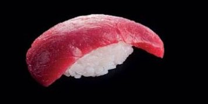
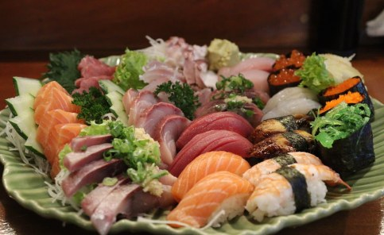
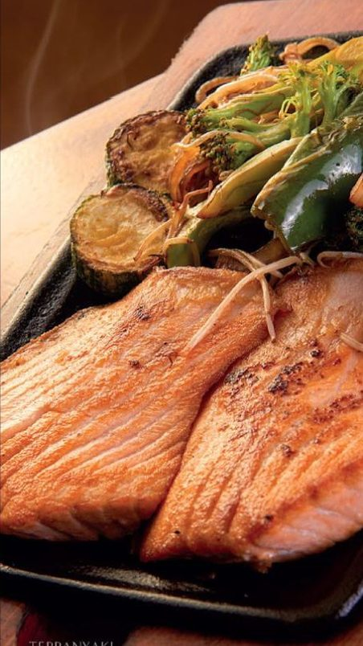
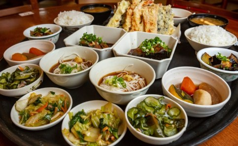
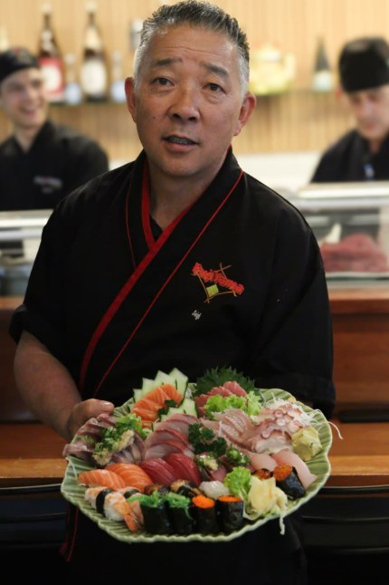
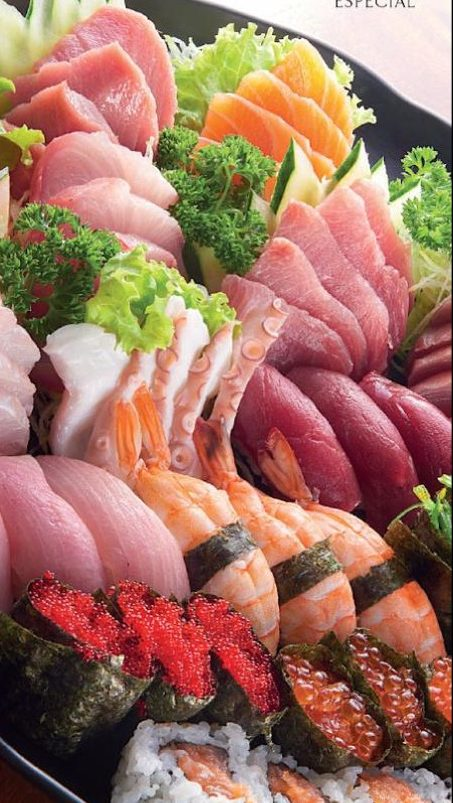

Irasshaimase! · Culinária japonesa de raiz
O verdadeiro sabor da tradição japonesa na Vila Leopoldina.
Sob o comando do sushiman Eduardo Seigi Saneto: peixes frescos, cortes precisos e pratos fartos, no salão ou no conforto da sua casa.

Sabores que respeitam a origem
Destaques da casa

Sushi e sashimi
Peixes frescos e cortes feitos na hora, em combinados para 1 a 4 pessoas.
A partir de R$ 95,90
Pratos quentes
Teppanyaki na chapa, tempurá e yakisoba, com arroz e missoshiru.
Ver pratos quentes
Teishoku
A refeição japonesa completa, farta e artesanal, servida em várias porções.
Ver teishokus
Nossa história e o sushiman
A tradição é servida todos os dias.
Eduardo Seigi Saneto trabalhou por anos na casa até assumir a tradição do antigo Mitsuba/Fujiyama. Hoje ele mantém viva uma cozinha japonesa de raiz, sem modismos: sashimi de corte preciso, combinados generosos e teishokus feitos com cuidado artesanal.
Seigi Saneto
- 一Cortes precisos
- 二Combinados generosos
- 三Teishokus artesanais
Cardápio
Preços em reais, sujeitos a alteração sem aviso prévio.

Festivais
Festival de Sushi
Festival Especial
Consulte nossos garçons.
Delivery e horários
Horários
Eventos e reservas
- Entregamos em domicílio. Consulte a área.
- Atendemos eventos residenciais.
- Reservas para reuniões e confraternizações.